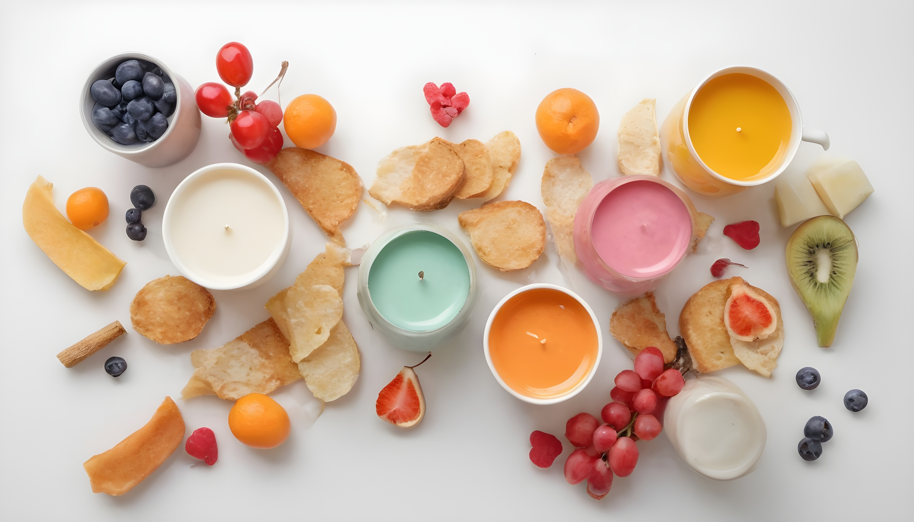
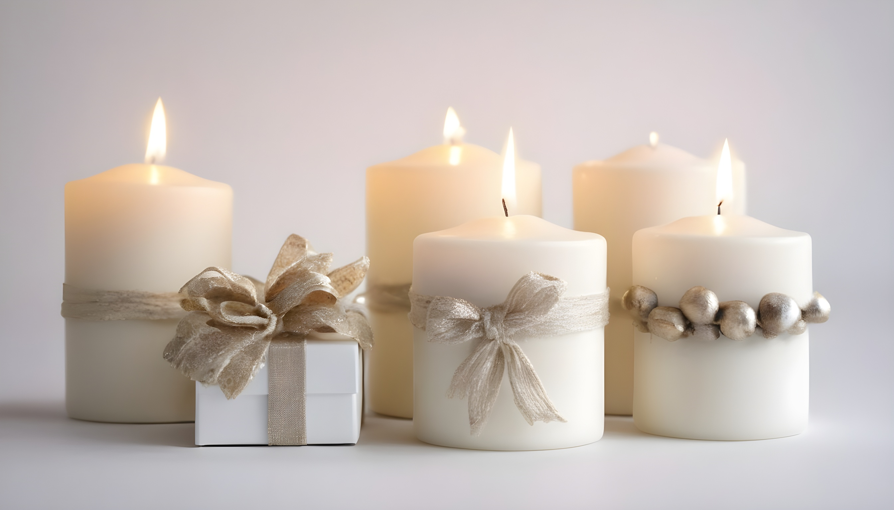
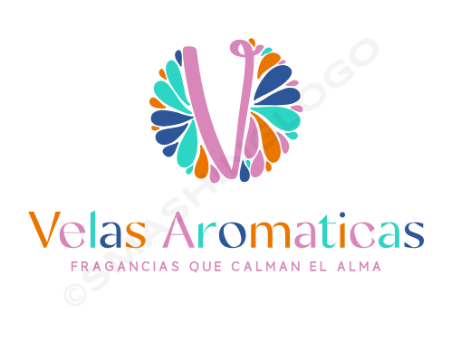

..Acerca de
|  |
|---|
..En nuestro local, nos especializamos en la creación de velas aromáticas únicas y de alta calidad. Nuestro objetivo es brindarte una experiencia sensorial única a. través de nuestras velas, que están disponibles en una amplia variedad de formas y aromas.Encontrarás una amplia selección de velas aromáticas en nuestro local. ..Desde velas clásicas en forma de vasos de cristal hasta velas en tarros con tapa, cada una de nuestras velas está diseñada cuidadosamente para brindarte una .. experiencia visual y olfativa excepcional. Además, ofrecemos una variedad de aromas, desde cítricos y florales hasta maderas y especias, para que puedas .. encontrar el aroma perfecto que se adapte a tus gustos y preferencias.
NUESTROS PRODUCTOS
VELAS DECORATIVAS Las velas con formas pueden ser una adición encantadora a la decoración de tu hogar u oficina, ya que pueden complementar diferentes estilos y temáticas. Además de proporcionar una iluminación suave y cálida. |
 | |
|---|---|---|
VELAS AROMATICAS Con aroma a canela y otros aromas agradables pueden ayudar a crear una atmósfera relajante y tranquila. El aroma cálido y reconfortante de la canela puede ayudar a reducir el estrés y la fatiga, promoviendo así una sensación de bienestar |
VELAS COMO REGALO Las velas para regalo son elementos sencillos y elegantes que pueden ser utilizados inmediatamente por los destinatarios en su hogar. Pueden ser una excelente opción para cualquier tipo de celebración, desde bodas y fiestas de graduación hasta cumpleaños y eventos especiales. |
|  | VELAS AROMATICAS Fragancias que calman el alma..............Machachi, Aloasi Avn.Los Pinos |
|---|